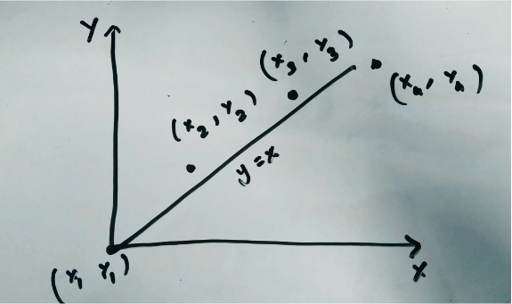
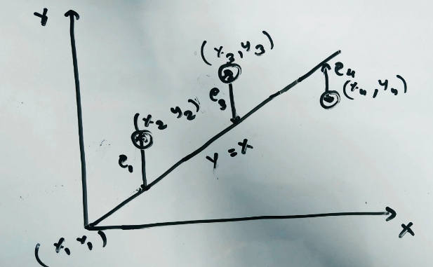
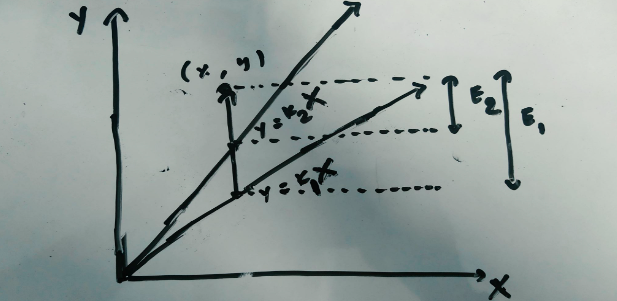
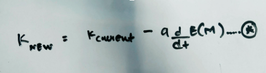

Machine learning Basics
Machine learning is a very popular term and is thrown in almost everything. What is machine learning actually? Well, in simplest of words teaching machines to think. This is a bit underwhelming. In this article I will try to give an extremely simple way of understanding Machine learning and also try to describe mathematics associated with it. Caution though, the math part can be somewhat tricky.
We have data on something. Let’s say we have data on house prices in which the only feature is the area of the house. For engineers out there, let’s say we have the area of the house in x-axis and the house price in y-axis. Also assume that we have four entries in the dataset. What the machine learning problem is to find an equation that will give us the most accurate y for a given x. We want to find this equation by using these four entries. The first entry in the data is given by the coordinate (0,0). This seems practical because for a zero area the cost is also zero. Let us assume the other data if plotted will be something like this.

This figure must seem very familiar for anyone who has taken statistics class. Now how do we find the best equation of the line for this data. Let us start with a basic y=x line. For every x the equivalent y will also be the same. The difference between the y given by our equation and the actual y is the error for that entry. For example, for x=3, y=3 too as per y=x but let’s say the actual entry is (3, 5). In this case the difference would be 5-3 equalling 2. So, for every x entry we determine the y and calculate the difference for each entry. If we consider y=kx then currently we have a slope of k=1.

What we are trying to achieve is to find the best value of k for which the sum of the square of the differences in the value from the line and the actual y is minimum. From now, let’s say predicted y as y_hat. The gist of machine learning is to find this k so that the error is minimized such that, when given a new x we get a very accurate prediction of the y.

Now how do we actually achieve this? How do we find the equation with the least error? First let’s take a look at an equation. The equation * gives a new slope by using the current slope and the rate of change of the error.

What is the meaning of this? The E(m) is the error function or commonly known as the cost function. Because our data set is 2D ( we have x and y only), the error function is also 2D. Using this error function and finding the slope of this error function E(m) until the slope is zero gives us the value of the new slope of the line for which the line gives the best estimate. This method of calculating the change of error and altering the current slope of the line to get a new slope as given by equation * is called Gradient Descent. I will try to go into the details of the Gradient Descent in another article. So this way we find the best equation y=kx for an optimal value of k. Using this equation we can now predict new y for a given x. This is the basics of Machine learning. Using the data and the error we managed to teach the computer to predict. If we look into this closely, it is clear that this is the linear regression problem. If this is the case why can’t we use an already defined formula to derive the equation? We certainly can, but the purpose of this is to introduce the idea of gradient descent and optimization as there will be data that has hundred and even more features for which a devised formula cannot be used and even if it can be used, it probably is not the best idea.